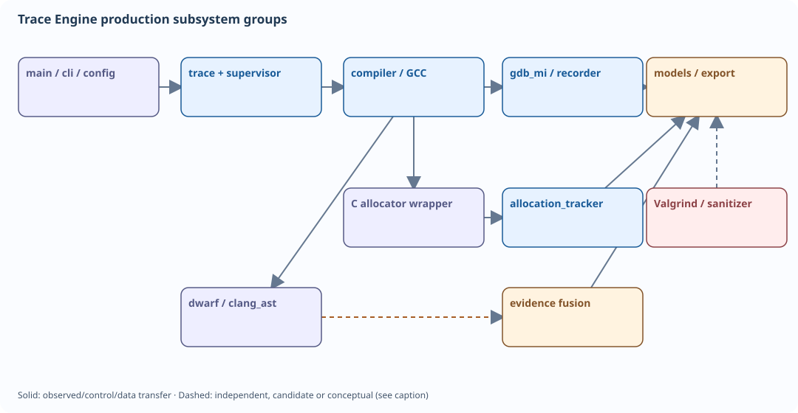
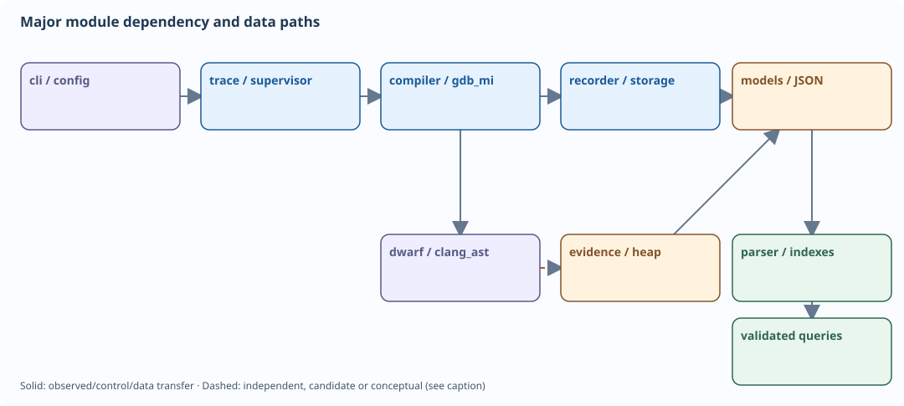

12 · Module dependency explorer #
Key terms #
| Term | Meaning |
|---|---|
| Module | A named group of Rust definitions, often backed by one source file or directory. |
| Dependency | A source-level reference, such as using another module's type. Some dependencies are about data, not function calls. |
How to read the maps #
Treat these as subsystem-level dependency and data-flow relationships. A module reference is not necessarily an executed call, because several boundaries aren't function calls at all:
- external processes (GCC, GDB, Valgrind),
- serialization (writing and reading JSON), and
- optional metadata (Clang).
When you need a specific call path, select a real function in the call-flow explorer and check its direct evidence.
Engine module groups #


| Point | Explanation |
|---|---|
| Entry/orchestration layer | Owns the session result. |
Shared models | Used by the recorder, diagnostics and parser. That doesn't make them peer processes. |
| C wrapper ↔ Rust | The C wrapper writes a file that Rust reads later. There is no Rust-to-C function call in the tracing loop. |
Parser module groups #

| Layer | Role |
|---|---|
| Parsing | Owns the canonical trace |
| Indexes | Own positions (not copies of records) |
| Raw and validated views | Borrow the trace |
Sources and limits #


The file inventory shows each file's outbound module references, labeled as static references. They are not certified function calls.
| This alone… | …does not prove |
|---|---|
| A shared data type | A particular function invocation |
| An imported module | A particular function invocation |
Graph edges carry distinct classifications and source evidence instead.